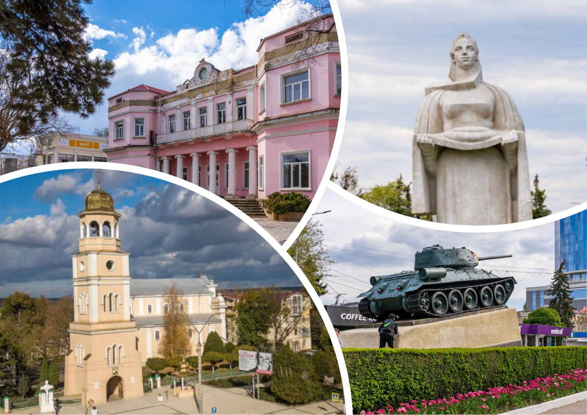

О городе
Бельцы — второй по величине город в Молдове
Бельцы — второй по величине город в Молдове, расположенный на севере страны. Город часто называют «северной столицей», так как он является важным экономическим, культурным и образовательным центром региона.
Чем гордится Бельцы
Бельцы гордятся своей развитой инфраструктурой, активной городской жизнью и удобством для жителей. Здесь сосредоточены предприятия, учебные заведения, торговые центры и места отдыха.
Город известен своей чистотой, зелёными зонами и уютной атмосферой. Центральные улицы и парки создают комфортную среду как для жителей, так и для гостей.